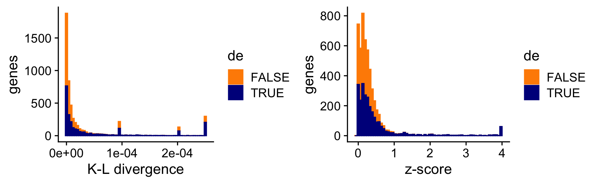

DE analysis using a topic model: evaluation using simulated data
Peter Carbonetto
Last updated: 2021-10-13
Checks: 7 0
Knit directory: single-cell-topics/analysis/
This reproducible R Markdown analysis was created with workflowr (version 1.6.2). The Checks tab describes the reproducibility checks that were applied when the results were created. The Past versions tab lists the development history.
Great! Since the R Markdown file has been committed to the Git repository, you know the exact version of the code that produced these results.
Great job! The global environment was empty. Objects defined in the global environment can affect the analysis in your R Markdown file in unknown ways. For reproduciblity it’s best to always run the code in an empty environment.
The command set.seed(1) was run prior to running the code in the R Markdown file. Setting a seed ensures that any results that rely on randomness, e.g. subsampling or permutations, are reproducible.
Great job! Recording the operating system, R version, and package versions is critical for reproducibility.
Nice! There were no cached chunks for this analysis, so you can be confident that you successfully produced the results during this run.
Great job! Using relative paths to the files within your workflowr project makes it easier to run your code on other machines.
Great! You are using Git for version control. Tracking code development and connecting the code version to the results is critical for reproducibility.
The results in this page were generated with repository version eceb899. See the Past versions tab to see a history of the changes made to the R Markdown and HTML files.
Note that you need to be careful to ensure that all relevant files for the analysis have been committed to Git prior to generating the results (you can use wflow_publish or wflow_git_commit). workflowr only checks the R Markdown file, but you know if there are other scripts or data files that it depends on. Below is the status of the Git repository when the results were generated:
Ignored files:
Ignored: data/droplet.RData
Ignored: data/pbmc_68k.RData
Ignored: data/pbmc_purified.RData
Ignored: data/pulseseq.RData
Ignored: output/droplet/diff-count-droplet.RData
Ignored: output/droplet/fits-droplet.RData
Ignored: output/droplet/rds/
Ignored: output/pbmc-68k/fits-pbmc-68k.RData
Ignored: output/pbmc-68k/rds/
Ignored: output/pbmc-purified/fits-pbmc-purified.RData
Ignored: output/pbmc-purified/rds/
Ignored: output/pulseseq/diff-count-pulseseq.RData
Ignored: output/pulseseq/fits-pulseseq.RData
Ignored: output/pulseseq/rds/
Untracked files:
Untracked: plots/
Unstaged changes:
Modified: code/de_eval_functions.R
Note that any generated files, e.g. HTML, png, CSS, etc., are not included in this status report because it is ok for generated content to have uncommitted changes.
These are the previous versions of the repository in which changes were made to the R Markdown (analysis/de_analysis_detailed_look.Rmd) and HTML (docs/de_analysis_detailed_look.html) files. If you’ve configured a remote Git repository (see ?wflow_git_remote), click on the hyperlinks in the table below to view the files as they were in that past version.
| File | Version | Author | Date | Message |
|---|---|---|---|---|
| Rmd | eceb899 | Peter Carbonetto | 2021-10-13 | workflowr::wflow_publish(“de_analysis_detailed_look.Rmd”, verbose = TRUE) |
| html | 7236187 | Peter Carbonetto | 2021-10-13 | Revised the data simulation and added some “shrink vs. noshrink” plots |
| Rmd | 6d63993 | Peter Carbonetto | 2021-10-13 | Made another simplification to simulate_twotopic_umi_data and added plots to de_analysis_detailed_look analysis comparing results with and without shrinkage. |
| Rmd | 157f7d3 | Peter Carbonetto | 2021-10-12 | Working on improved script driving_genes_better.R. |
| html | af856a2 | Peter Carbonetto | 2021-10-12 | Fixed the plots showing properties of the simulated data in the |
| Rmd | 2726a86 | Peter Carbonetto | 2021-10-12 | workflowr::wflow_publish(“de_analysis_detailed_look.Rmd”) |
| html | b8eadee | Peter Carbonetto | 2021-10-11 | Added some basic histograms to the de_analysis_detailed_look analysis. |
| Rmd | e2577f1 | Peter Carbonetto | 2021-10-11 | Working on the data simulation step in the de_analysis_detailed_look |
| html | cd17ccf | Peter Carbonetto | 2021-10-09 | Initial build of the de_analysis_detailed_look workflowr page. |
| Rmd | b8e1fe8 | Peter Carbonetto | 2021-10-09 | workflowr::wflow_publish(“de_analysis_detailed_look.Rmd”) |
| Rmd | 888ea7d | Peter Carbonetto | 2021-10-08 | I have an initial implementation of function simulate_twotopic_scrnaseq_data used to evaluate the de_analysis methods in fastTopics. |
Add summary of the analysis here.
Load the packages used in the analysis below, and some additional functions for simulating the data.
library(Matrix)
library(fastTopics)
library(ggplot2)
library(cowplot)
source("../code/de_eval_functions.R")Simulate UMI counts
We begin by simulating counts from a rank-2 Poisson NMF model with parameters chosen to roughly mimic the UMI counts from a single-cell RNA sequencing experiment. In particular, we simulate counts \(x_{ij} \sim \mathrm{Poisson}(\lambda_{ij})\) such that \(\lambda_{ij} = \sum_{k=1}^K s_i l_{ik} f_{jk}\), with \(K = 2\). For now, we focus our attention on the \(K = 2\) case to simplify the evaluation of the DE methods; comparing gene expression between three or topics brings some additional complications which aren’t necessary for assessing basic properties of the new DE methods. For more details on how the data are simulated, see function simulate_twotopic_umi_data.
set.seed(1)
dat <- simulate_twotopic_umi_data()
X <- dat$X
F <- dat$F
L <- dat$LBefore fitting a topic model and running a DE analysis, we first inspect some basic properties of the simulated data.
The sample sizes (total counts for each cell) are roughly normal on the (base-10) log scale:
s <- rowSums(X)
p1 <- ggplot(data.frame(s = log10(s)),aes(x = s)) +
geom_histogram(color = "white",fill = "black",bins = 32) +
labs(x = "log10 size",y = "cells") +
theme_cowplot()
print(p1)
The expression rates were simulated so that they are normally distributed on the log scale:
p2 <- ggplot(data.frame(f = as.vector(F)),aes(x = log10(f))) +
geom_histogram(color = "white",fill = "black",bins = 32) +
labs(x = "log10 expression rate",y = "genes") +
theme_cowplot()
print(p2)
About half of the genes have nonzero differences in expression between the two topics. Among the nonzero gene expression differences, the log-fold changes (LFCs) were simulated from the normal distribution:
nonzero_lfc <- abs(F[,1] - F[,2]) > 1e-8
lfc <- log2(F[,1]/F[,2])
p3 <- ggplot(data.frame(lfc = lfc[nonzero_lfc]),aes(x = lfc)) +
geom_histogram(color = "white",fill = "black",bins = 32) +
labs(x = "LFC",y = "genes") +
theme_cowplot()
print(p3)
mean(nonzero_lfc)
# [1] 0.496
Fit multinomial topic model to UMI counts
Here we fit a multinomial topic model to the simulated UMI count data. To simplify evaluation of the DE methods, we assume that the topic proportions are known, and set them to their ground truth values (that is, the values used to simulate the data), so that the only error that can arise is in the estimates of the expression rates \(f_{ij}\) in the multinomial topic model.
fit0 <- init_poisson_nmf(X,F = dat$F,L = with(dat,s*L))
fit <- fit_poisson_nmf(X,fit0 = fit0,numiter = 40,method = "scd",
update.loadings = NULL,verbose = "none")
fit <- poisson2multinom(fit)
summary(fit)
# Model overview:
# Number of data rows, n: 200
# Number of data cols, m: 10000
# Rank/number of topics, k: 2
# Evaluation of model fit (40 updates performed):
# Poisson NMF log-likelihood: -7.169037374429e+05
# Multinomial topic model log-likelihood: -7.158926302076e+05
# Poisson NMF deviance: +8.564731575439e+05
# Max KKT residual: +4.123695e-06DE analysis with and without shrinkage
First we perform a DE analysis without shrinking the LFC estimates:
set.seed(1)
de.noshrink <- de_analysis(fit,X,shrink.method = "none",
control = list(ns = 1e4,nc = 4))
# Fitting 10000 Poisson models with k=2 using method="scd".
# Computing log-fold change statistics from 10000 Poisson models with k=2.Now we perform a second DE analysis using adaptive shrinkage to shrink (and hopefully improve accuracy of) the LFC estimates:
set.seed(1)
de <- de_analysis(fit,X,shrink.method = "ash",control = list(ns = 1e4,nc = 4))
# Fitting 10000 Poisson models with k=2 using method="scd".
# Computing log-fold change statistics from 10000 Poisson models with k=2.
# Stabilizing posterior log-fold change estimates using adaptive shrinkage.Add text here.
pdat <- data.frame(noshrink = de.noshrink$postmean[,1],
shrink = de$postmean[,1],
log10mean = log10(de$f0))
p4 <- ggplot(pdat,aes(x = noshrink,y = shrink,fill = log10mean)) +
geom_point(shape = 21,color = "white",size = 2) +
geom_abline(intercept = 0,slope = 1,color = "black",linetype = "dotted") +
scale_fill_gradient2(low = "deepskyblue",mid = "gold",high = "orangered",
midpoint = -4) +
labs(x = "original LFC estimates",
y = "shrunken LFC estimates") +
theme_cowplot()
print(p4)
| Version | Author | Date |
|---|---|---|
| 7236187 | Peter Carbonetto | 2021-10-13 |
Add text here.
pdat <- data.frame(noshrink = clamp(de.noshrink$z[,1],-4,+4),
shrink = clamp(de$z[,1],-4,+4),
de = factor(nonzero_lfc))
p5 <- ggplot(pdat,aes(x = noshrink,color = de,fill = de)) +
geom_histogram(bins = 64) +
scale_color_manual(values = c("darkorange","darkblue")) +
scale_fill_manual(values = c("darkorange","darkblue")) +
labs(x = "z-score",y = "genes",title = "without shrinkage") +
theme_cowplot()
p6 <- ggplot(pdat,aes(x = shrink,color = de,fill = de)) +
geom_histogram(bins = 64) +
scale_color_manual(values = c("darkorange","darkblue")) +
scale_fill_manual(values = c("darkorange","darkblue")) +
labs(x = "z-score",y = "genes",title = "with shrinkage") +
theme_cowplot()
print(plot_grid(p5,p6))
| Version | Author | Date |
|---|---|---|
| 7236187 | Peter Carbonetto | 2021-10-13 |
Add text here.
pdat <- data.frame(noshrink = 10^(-de.noshrink$lpval[,1]),
shrink = 10^(-de$lpval[,1]),
de = factor(nonzero_lfc))
p7 <- ggplot(pdat,aes(x = noshrink,color = de,fill = de)) +
geom_histogram(bins = 64) +
scale_color_manual(values = c("darkorange","darkblue")) +
scale_fill_manual(values = c("darkorange","darkblue")) +
labs(x = "p-value",y = "genes",title = "without shrinkage") +
theme_cowplot()
p8 <- ggplot(pdat,aes(x = shrink,color = de,fill = de)) +
geom_histogram(bins = 64) +
scale_color_manual(values = c("darkorange","darkblue")) +
scale_fill_manual(values = c("darkorange","darkblue")) +
labs(x = "p-value",y = "genes",title = "with shrinkage") +
theme_cowplot()
print(plot_grid(p7,p8))
| Version | Author | Date |
|---|---|---|
| 7236187 | Peter Carbonetto | 2021-10-13 |
Add text here.
i <- which(fit$F[,1] - fit$F[,2] > -1e-8)
D <- fastTopics:::min_kl_poisson(fit$F)
pdat <- data.frame(kl = pmin(D[,1],0.00025),
de = factor(nonzero_lfc))
pdat1 <- pdat[i,]
p9 <- ggplot(pdat1,aes(x = kl,color = de,fill = de)) +
geom_histogram(bins = 64) +
scale_color_manual(values = c("darkorange","darkblue")) +
scale_fill_manual(values = c("darkorange","darkblue")) +
labs(x = "K-L divergence",y = "genes") +
theme_cowplot()
pdat2 <- data.frame(z = clamp(de$z[,1],-4,+4),
de = factor(nonzero_lfc))
pdat2 <- pdat2[i,]
p10 <- ggplot(pdat2,aes(x = z,color = de,fill = de)) +
geom_histogram(bins = 64) +
scale_color_manual(values = c("darkorange","darkblue")) +
scale_fill_manual(values = c("darkorange","darkblue")) +
labs(x = "z-score",y = "genes") +
theme_cowplot()
print(plot_grid(p9,p10))
pdat <- data.frame(est = de$est[,1],
shrink = de$postmean[,1],
log10mean = log10(de$f0))
p11 <- ggplot(pdat,aes(x = est,y = shrink,fill = log10mean)) +
geom_point(shape = 21,color = "white",size = 2) +
geom_abline(intercept = 0,slope = 1,color = "black",linetype = "dotted") +
scale_fill_gradient2(low = "deepskyblue",mid = "gold",high = "orangered",
midpoint = -4) +
labs(x = "point estimates",
y = "shrunken posterior estimates") +
theme_cowplot()
print(p11)pdat1 <- create_fdr_vs_power_curve(-D[,1],nonzero_lfc)
pdat2 <- create_fdr_vs_power_curve(-de.noshrink$lpval,nonzero_lfc)
pdat3 <- create_fdr_vs_power_curve(-de$lpval,nonzero_lfc)
pdat <- rbind(cbind(pdat1,method = "kl"),
cbind(pdat2,method = "noshrink"),
cbind(pdat3,method = "shrink"))
p12 <- ggplot(pdat,aes(x = fdr,y = power,color = method)) +
geom_point(size = 0.75) +
scale_color_manual(values = c("royalblue","limegreen","darkorange")) +
theme_cowplot()
print(p12)
sessionInfo()
# R version 3.6.2 (2019-12-12)
# Platform: x86_64-apple-darwin15.6.0 (64-bit)
# Running under: macOS Catalina 10.15.7
#
# Matrix products: default
# BLAS: /Library/Frameworks/R.framework/Versions/3.6/Resources/lib/libRblas.0.dylib
# LAPACK: /Library/Frameworks/R.framework/Versions/3.6/Resources/lib/libRlapack.dylib
#
# locale:
# [1] en_US.UTF-8/en_US.UTF-8/en_US.UTF-8/C/en_US.UTF-8/en_US.UTF-8
#
# attached base packages:
# [1] stats graphics grDevices utils datasets methods base
#
# other attached packages:
# [1] cowplot_1.0.0 ggplot2_3.3.5 fastTopics_0.6-70 Matrix_1.2-18
#
# loaded via a namespace (and not attached):
# [1] httr_1.4.2 tidyr_1.1.3 jsonlite_1.7.2 viridisLite_0.3.0
# [5] RcppParallel_4.4.2 assertthat_0.2.1 mixsqp_0.3-46 yaml_2.2.0
# [9] progress_1.2.2 ggrepel_0.9.1 pillar_1.6.2 backports_1.1.5
# [13] lattice_0.20-38 quantreg_5.54 glue_1.4.2 quadprog_1.5-8
# [17] digest_0.6.23 promises_1.1.0 colorspace_1.4-1 htmltools_0.4.0
# [21] httpuv_1.5.2 pkgconfig_2.0.3 invgamma_1.1 SparseM_1.78
# [25] purrr_0.3.4 scales_1.1.0 whisker_0.4 later_1.0.0
# [29] Rtsne_0.15 MatrixModels_0.4-1 git2r_0.26.1 tibble_3.1.3
# [33] farver_2.0.1 generics_0.0.2 ellipsis_0.3.2 withr_2.4.2
# [37] ashr_2.2-51 lazyeval_0.2.2 magrittr_2.0.1 crayon_1.4.1
# [41] mcmc_0.9-6 evaluate_0.14 fs_1.3.1 fansi_0.4.0
# [45] MASS_7.3-51.4 truncnorm_1.0-8 tools_3.6.2 data.table_1.12.8
# [49] prettyunits_1.1.1 hms_1.1.0 lifecycle_1.0.0 stringr_1.4.0
# [53] MCMCpack_1.4-5 plotly_4.9.2 munsell_0.5.0 irlba_2.3.3
# [57] compiler_3.6.2 rlang_0.4.11 grid_3.6.2 htmlwidgets_1.5.1
# [61] labeling_0.3 rmarkdown_2.3 gtable_0.3.0 DBI_1.1.0
# [65] R6_2.4.1 knitr_1.26 dplyr_1.0.7 utf8_1.1.4
# [69] workflowr_1.6.2 rprojroot_1.3-2 stringi_1.4.3 parallel_3.6.2
# [73] SQUAREM_2017.10-1 Rcpp_1.0.7 vctrs_0.3.8 tidyselect_1.1.1
# [77] xfun_0.11 coda_0.19-3